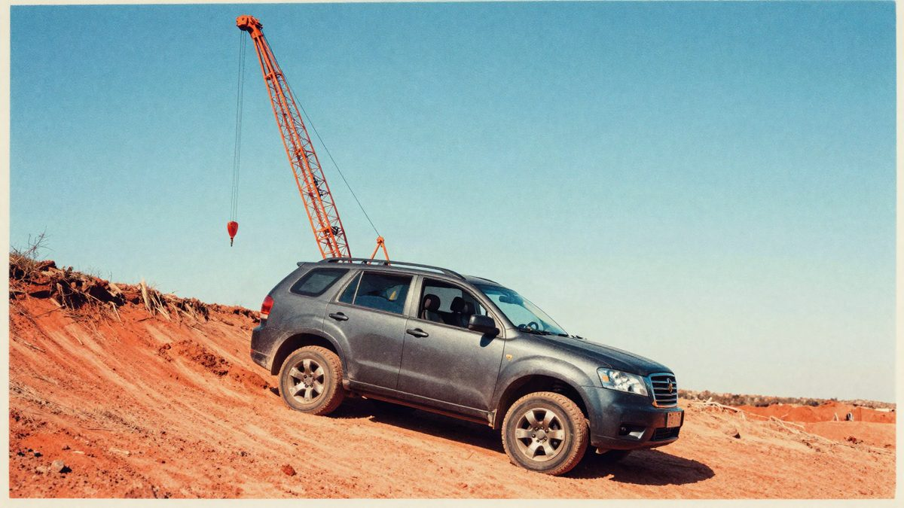
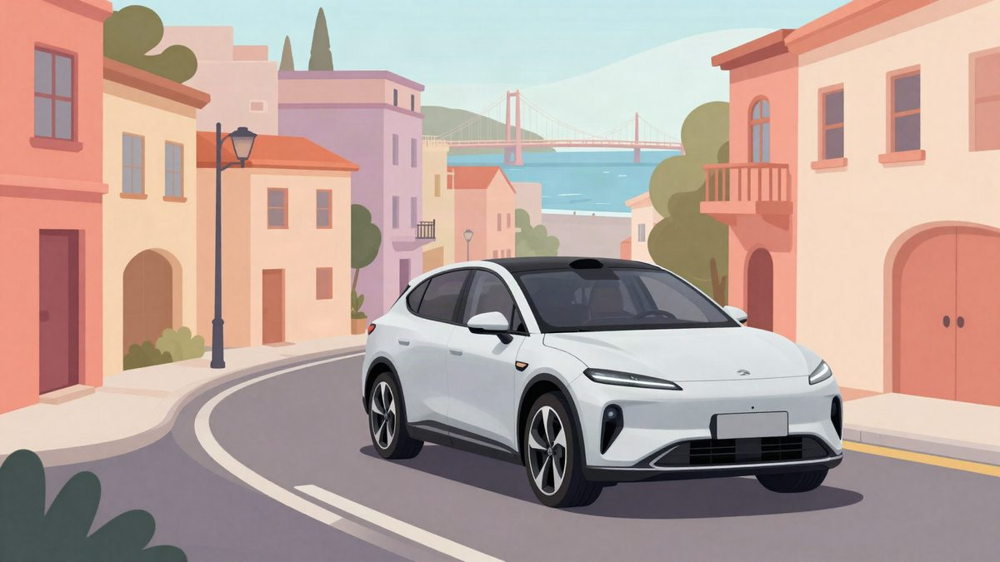

Lynk & Co 900L pao s 12 metara i prevrnuo se 10 puta, kabina ostala čitava

Lynk & Co je u Zhangjiakouu izveo 17 ekstremnih sigurnosnih testova na šest modela, a prema proizvođaču su svi prošli. Najzahtjevniji je bio pad SUV-a 900L teškog oko 3 tone s visine od 12 metara, nakon čega se prevrnuo 10 puta. Cijene i dostupnost na europskom tržištu još nisu poznati.
Kineski proizvođač Lynk & Co održao je u Zhangjiakouu javnu demonstraciju sigurnosti nazvanu "Ultra safety class". Šest modela, Lynk & Co 03, 07GT, 10 EV, novi 20, 900L i 08 EM-P, prošlo je ukupno 17 ekstremnih testova. Među njima su benzinci, plug-in hibridi i električni automobili.
Najzahtjevniji test odrađen je na vodećem SUV-u 900L. Vozilo teško oko 3 tone podignuto je bočno na 12 metara, pušteno i udarilo u nagib vertikalnom brzinom od oko 55 km/h. Zatim se prevrnulo 10 puta, čime se simulira pad s litice od stotinjak metara.
Putnička kabina ostala je cjelovita. Prema proizvođaču, na A, B, C i D stupovima nije došlo do strukturnog otkazivanja. Pirotehnički pretezači pojasa i bočne zračne zavjese aktivirali su se, a baterija se nije zapalila, nije eksplodirala i nije curila. Vrata su tijekom prevrtanja ostala zaključana, a nakon pada ih je bilo moguće normalno otvoriti. Sustav E-CALL automatski je uspostavio vezu s operaterom.
Kako je 900L građen
Model se temelji na arhitekturi SPA Evo i ima kavezastu karoseriju. Lynk & Co navodi integrirani dvostruki okvir vrata izrađen vrućim prešanjem, a kritična područja u cijelosti su pokrivena toplo oblikovanim čelikom. B stup ima ojačanje od cijevi izrađene toplim plinskim širenjem, čvrstoće 2000 MPa. Stražnji pod izliven je od aluminija u jednom komadu na preši od 7200 tona. Nosači u vratima imaju W oblik i također su od čelika čvrstoće 2000 MPa.
Automobil ima 13 zračnih jastuka, što Lynk & Co opisuje kao najviše u klasi. Jastuk koji štiti glave putnika u sva tri reda izveden je u jednom komadu, a Lynk & Co tvrdi da je to prvi takav u klasi.
Ostalih pet modela
Lynk & Co 07GT izveo je skok s platforme od stotinjak metara te se u zraku okrenuo šest puta prije slijetanja. Novi 08 EM-P izdržao je višestruke udare čelične kugle teške 1,4 tone iz različitih kutova. Novi model 20 nakon udara donjim dijelom pri velikoj brzini udario je u kruti stup brzinom od 50 km/h. Model 03 prošao je test izbjegavanja losa (moose test) na mokroj cesti, a 10 EV je pri 130 km/h potvrdio rad funkcije AES za automatsko izbjegavanje sudara.
Izvor: MyDrivers (快科技)
Povezani članci
 Photon Matrix: kineski laser navodno uništava do 30 komaraca u sekundi22. studenoga 2026.
Photon Matrix: kineski laser navodno uništava do 30 komaraca u sekundi22. studenoga 2026. Novi Wenjie M8 stiže od oko 49.300 eura, za dva sata skupio 4.600 narudžbi14. studenoga 2026.
Novi Wenjie M8 stiže od oko 49.300 eura, za dva sata skupio 4.600 narudžbi14. studenoga 2026.
Mercedes-Benz je u San Franciscu pokazao MB.DRIVE ASSIST PRO, gradsku vožnju s 27 senzora i konkurenta Teslinom FSD-u20. studenoga 2026.